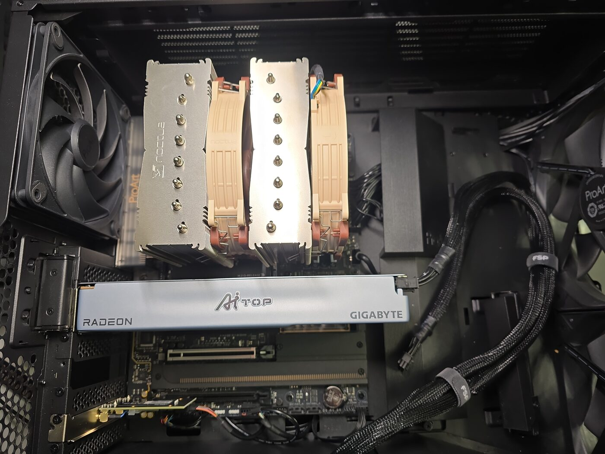
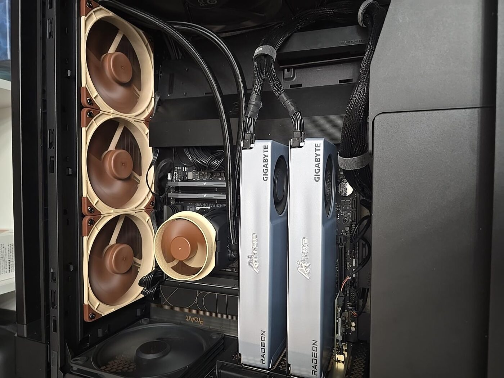
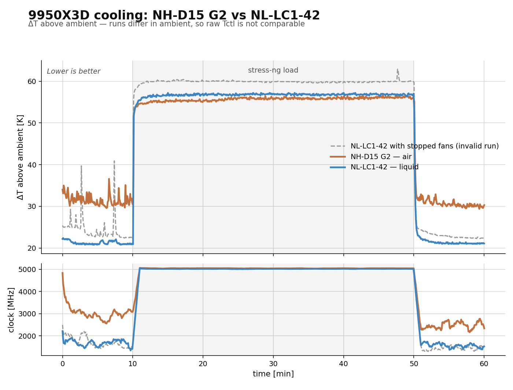
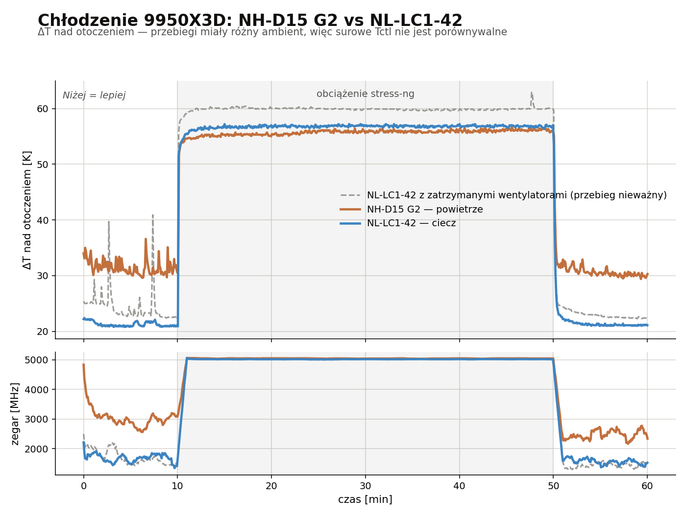

Fans normalized per revolution
Wentylatory w przeliczeniu na obrót
Two CPU cooler fan sets, same workstation, same 40-minute all-core load. Once the thermal result is a tie, the interesting question is what each set had to spin to get there.
Dwa zestawy wentylatorów CPU, ta sama stacja, to samo 40-minutowe obciążenie all-core. Skoro wynik termiczny to remis, ciekawe staje się pytanie, ile każdy zestaw musiał się nakręcić, żeby go osiągnąć.
RPM is not work. The physical quantities are airflow (CFM) and static pressure. Revolutions per minute is only a proxy, and a weak one across different fan frames, blade geometries, and heat-exchanger types. Everything below is a constructed index for comparing two specific configurations on one machine — not a physical measurement and not a general claim about towers versus AIOs.
RPM to nie praca. Wielkościami fizycznymi są przepływ powietrza (CFM) i ciśnienie statyczne. Obroty na minutę to jedynie przybliżenie — słabe, gdy porównuje się różne ramki, geometrie łopatek i typy wymienników ciepła. Wszystko poniżej to wskaźnik skonstruowany do porównania dwóch konkretnych konfiguracji na jednej maszynie — nie pomiar fizyczny i nie ogólna teza o wieżach kontra AIO.
The machine, before and after
Maszyna przed i po


The two configurations
Dwie konfiguracje
| Measured | Zmierzone | Noctua NH-D15 G2 | Noctua NL-LC1-42 | ratio |
|---|---|---|---|---|
| Fans on the cooler | Wentylatory na chłodzeniu | 2 × 140 mm | 3 × NF-A14x25 G2 | 1.50× |
| RPM per fan under load | RPM na wentylator pod obciążeniem | 1436 | 2162 | 1.51× |
| Total rotation (fans × RPM) | Suma obrotów (szt. × RPM) | 2872 | 6486 | 2.26× |
| ΔT over ambient, load | ΔT nad otoczeniem, obciążenie | 56.1 K | 56.8 K | 1.01× |
| Peak Tctl | Tctl szczytowe | 81.2 °C | 81.2 °C | 1.00× |
| Sound level @ 50 cm | Poziom dźwięku @ 50 cm | 53–55 dBA | 51.2–53 dBA | −1.9 dBA |
Sound measured with the same phone app (SPL Meter, KTW Apps) at the same 50 cm distance during the load phase. Uncalibrated microphone: the difference is meaningful, the absolute values are app readings, not calibrated dBA.
Dźwięk mierzony tą samą aplikacją telefonu (SPL Meter, KTW Apps), z tej samej odległości 50 cm, w fazie obciążenia. Mikrofon nieskalibrowany: sens ma różnica, wartości bezwzględne to wskazania aplikacji, nie skalibrowane dBA.
The measurement itself
Sam pomiar


bom/cooling-test/.
Oba ważne przebiegi leżą na sobie przez całe 40 minut obciążenia, a zegary są nieodróżnialne. Szara linia przerywana to przebieg nieważny — to samo chłodzenie z zatrzymanymi wentylatorami chłodnicy — zachowany wyłącznie jako kontrola negatywna. Dane przetworzone w Polars; skrypt i surowe CSV leżą w bom/cooling-test/.
Normalized per revolution
W przeliczeniu na obrót
Two indices. Thermal cost multiplies temperature rise by rotation — lower is better, because you want both a cold CPU and slow fans. Acoustic intensity converts dBA to a linear scale (I ∝ 10dBA/10) before dividing, because decibels are logarithmic and must never be divided directly.
Dwa wskaźniki. Koszt termiczny mnoży przyrost temperatury przez obroty — niżej znaczy lepiej, bo chcesz jednocześnie zimnego procesora i wolnych wentylatorów. Natężenie akustyczne przelicza dBA na skalę liniową (I ∝ 10dBA/10) przed dzieleniem, bo decybele są logarytmiczne i nigdy nie wolno ich dzielić wprost.
| Index | Wskaźnik | NH-D15 G2 | NL-LC1-42 | Winner | Wygrywa |
|---|---|---|---|---|---|
| Thermal cost per fan (ΔT × RPM) | Koszt termiczny na wentylator (ΔT × RPM) | 80 560 | 122 802 | tower, 1.52× | wieża, 1.52× |
| Thermal cost total (ΔT × Σ RPM) | Koszt termiczny łącznie (ΔT × Σ RPM) | 161 119 | 368 405 | tower, 2.29× | wieża, 2.29× |
| Acoustic intensity, total (arb. units) | Natężenie akustyczne, łącznie (j.u.) | 251 189 | 162 181 | AIO, 1.55× | AIO, 1.55× |
| Acoustic intensity per unit rotation | Natężenie akustyczne na jednostkę obrotu | 87.46 | 25.00 | AIO, 3.50× | AIO, 3.50× |
2.29×
The tower converts rotation into cooling far better. The AIO needs 2.26× the total rotation to land the same temperature.
Wieża znacznie lepiej zamienia obroty w chłodzenie. AIO potrzebuje 2,26× więcej sumy obrotów, żeby trafić w tę samą temperaturę.
−71%
The AIO fans are far quieter per revolution. Per unit of rotation they emit 71% less acoustic intensity, which is why 2.26× the spinning still measures quieter.
Wentylatory AIO są dużo cichsze na obrót. Na jednostkę obrotu emitują o 71% mniej natężenia akustycznego — dlatego 2,26× więcej kręcenia i tak wychodzi ciszej.
What this means
Co z tego wynika
The two effects point in opposite directions and very nearly cancel. At the operating point the machine lands on the same temperature and a barely-different noise level, so the choice between these coolers is not a thermal decision. The per-revolution view explains why the tie happens rather than changing it.
Oba efekty działają w przeciwne strony i niemal się znoszą. W punkcie pracy maszyna ląduje na tej samej temperaturze i ledwie różnym poziomie hałasu, więc wybór między tymi chłodzeniami nie jest decyzją termiczną. Spojrzenie „na obrót" tłumaczy, dlaczego wychodzi remis — nie zmienia go.
Interpretation, not measurement. A plausible reading is that the liquid cooler inserts an extra transfer stage — die → coldplate → water → radiator → air — where the tower goes die → baseplate → heatpipes → fins → air. More stages means more total thermal resistance, so more airflow is needed for the same result. This test did not measure stage-by-stage resistance and cannot confirm that mechanism.
Interpretacja, nie pomiar. Prawdopodobne wyjaśnienie: chłodzenie cieczą dokłada dodatkowy etap przekazu ciepła — rdzeń → coldplate → woda → chłodnica → powietrze — tam gdzie wieża idzie rdzeń → podstawa → ciepłowody → żeberka → powietrze. Więcej etapów to większa sumaryczna oporność cieplna, więc ten sam wynik wymaga większego przepływu. Ten test nie mierzył oporności etap po etapie i nie potwierdza tego mechanizmu.
Limits of this comparison
Ograniczenia tego porównania
- RPM is a proxy, not work. Two fans at equal RPM can move very different volumes of air. Comparing rotation across a fin stack and a 420 mm radiator is indicative only.
- RPM to przybliżenie, nie praca. Dwa wentylatory na tych samych obrotach mogą przetłaczać zupełnie różne objętości powietrza. Porównywanie obrotów między blokiem żeberek a chłodnicą 420 mm jest wyłącznie orientacyjne.
- The sound reading is whole-machine. It includes case fans, GPU and PSU, not just the CPU cooler. Attributing all of it to the CPU fans overstates both figures.
- Odczyt dźwięku obejmuje całą maszynę. Zawiera wentylatory obudowy, GPU i zasilacz, nie tylko chłodzenie CPU. Przypisanie całości wentylatorom CPU zawyża obie liczby.
- Room background was not measured. Without it, an unknown share of 51–55 dBA belongs to the room rather than the machine.
- Nie zmierzono tła pomieszczenia. Bez tego nieznana część z 51–55 dBA należy do pokoju, a nie do maszyny.
- The RPM figure comes from a channel of unsettled origin. The 2162 RPM is read from
CPU_Opt, and the report leaves open whether that channel reports the radiator fans or the pump. Every per-revolution figure on this page inherits that uncertainty. - Liczba obrotów pochodzi z kanału o nierozstrzygniętym źródle. 2162 obr/min odczytano z
CPU_Opt, a raport pozostawia otwarte, czy ten kanał pokazuje wentylatory chłodnicy, czy pompę. Każdy wskaźnik „na obrót” na tej stronie dziedziczy tę niepewność. - The 0.7 K thermal difference is below the resolution of this test. Do not read it as either cooler being better under load.
- Różnica 0,7 K jest poniżej rozdzielczości tego testu. Nie czytaj jej jako przewagi któregokolwiek chłodzenia pod obciążeniem.
Method and provenance
Metoda i proweniencja
AMD Ryzen 9 9950X3D, 16C/32T. Each run: 10 min idle → 40 min stress-ng matrixprod on all 32 threads → 10 min cooldown, sensors sampled every 5 s from k10temp and asus-ec-sensors. Comparison metric is ΔT over ambient, because ambient differed between runs. Fan RPM read from the CPU_Opt channel. Load-phase figures are the mean of the final 10 minutes.
AMD Ryzen 9 9950X3D, 16C/32T. Każdy przebieg: 10 min bezczynności → 40 min stress-ng matrixprod na wszystkich 32 wątkach → 10 min stygnięcia, próbkowanie sensorów co 5 s z k10temp i asus-ec-sensors. Metryką porównawczą jest ΔT nad otoczeniem, bo ambient różnił się między przebiegami. Obroty odczytane z kanału CPU_Opt. Wartości fazy obciążenia to średnia z ostatnich 10 minut.
Source runs: noctua_20260731-2232.csv (ambient 24.5 °C) and lc142-fanC_20260823-0833.csv (ambient 24.0 °C). Script, raw CSVs and the full report live in bom/cooling-test/. A third run exists and is invalid — its radiator fans were stopped throughout; it is retained only as a negative control.
Przebiegi źródłowe: noctua_20260731-2232.csv (otoczenie 24,5 °C) i lc142-fanC_20260823-0833.csv (otoczenie 24,0 °C). Skrypt, surowe CSV i pełny raport leżą w bom/cooling-test/. Istnieje trzeci przebieg i jest nieważny — jego wentylatory chłodnicy stały przez cały czas; zachowany wyłącznie jako kontrola negatywna.